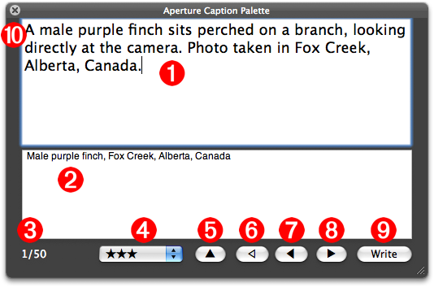
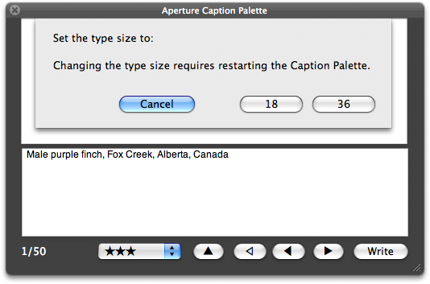
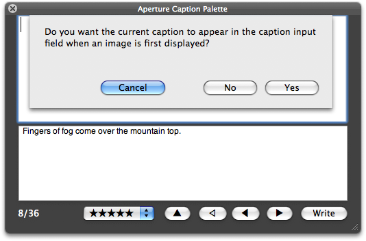

Aperture Caption Palette
Hands-free captioning and rating! Image this: you've just finished importing your latest award-winning shots, and it's time to caption and rate the images. Instead of crouching over a keyboard, you sit back in your easy-chair sipping a mug of your favorite brew while speaking your thoughts to the computer screen, which somehow magically understands and transcribes your musings and executes your commands.
Just a dream? Nope, it's here. Enhanced AppleScript support in Aperture 2.1 combines with the latest in Macintosh speech recognition technology to provide you with the ultimate in time-saving, coffee-drinking, hands-free photograhic workflow ease.
The Aperture Caption Palette is a resizable window that floats over the full-screen display of your selected images, allowing instant access and input to both the displayed image's caption and ratings data. Simply select the images to process, launch the Caption Palette application and you're ready to go!

Palette Controls
The Aperture Caption Palette (shown in actual size above) can be controlled either by: pressing controls on the floating palette; using keyboard shortcuts; or via voice commands and dictation using MacSpeech Dictate. Here is a summary of the options and shortcuts for controlling the Caption Palette from the keyboard:
- Caption Input Field • Enter the caption text in this field. When the palette is frontmost, this field will accept input.
- Existing Caption Field • This area will display the current caption, if any, for the displayed image. This field is not editable.
- Image Counter • This combination of two numbers indicates the index of the currently displayed image in the list of selected images, followed by the total number of selected images.
- Ratings Menu (Command-Option-0 thru 5) • This popup menu shows the current rating for the displayed image. You can change the rating by selecting another option from the popup menu.
- Copy Caption Button (Command-5) • Click this control to replace the contents of the caption input field (1) with the existing caption.
- Start Button (Command-1) • Click this button to display the first image in the list of selected images.
- Back Button (Command-2) • Click this button to display the previous image in the list of selected images. Any text in the caption input field will not be stored or applied to the current image.
- Next Button (Command-3) • Click this button to display the next image in the list of selected images. Any text in the caption input field will not be stored or applied to the current image.
- Write Button (Command-4) • Click this button to write the contents of the caption input field to the image caption tag. After writing the data, the next image in the list of selected images will be displayed.
- Close Button (Command-W) • Click this button to close the palette and automatically exit full-screen mode.
Other Commands
In addition, there are two keyboard commands for speaking text contained in the Caption Palette:
- Speak New Caption (Command-Option-E) • This command uses the text-to-speech technology built into Mac OS X to speak the contents of caption input field.
- Speak Current Caption (Command-Option-R) • This command uses the text-to-speech technology built into Mac OS X to speak the contents of current caption field.
Display Preferences
For those that want to sit back (way back) from the screen, you can increase the size of the text displayed in the caption input field to 36-point by using the keyboard shortcut Command-Option-F to summon this drop-down preference dialog:

Also, if you prefer to have existing captions automatically displayed in the caption inut field in addition to the current caption field, type Command-Option-S to summon this preference dialog:

Try It For Yourself
If you're one of the "seeing is believing" types, download the Aperture Caption Palette installer, and enjoy hands-free captioning.
Download the installer.